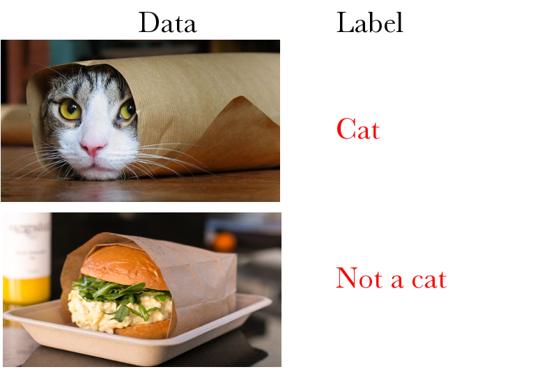
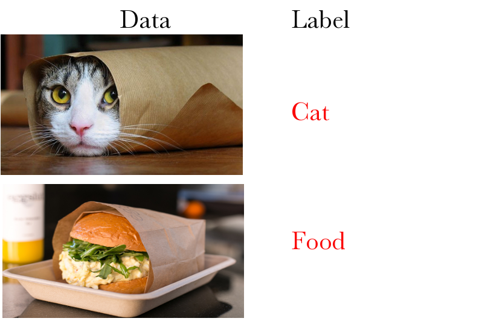
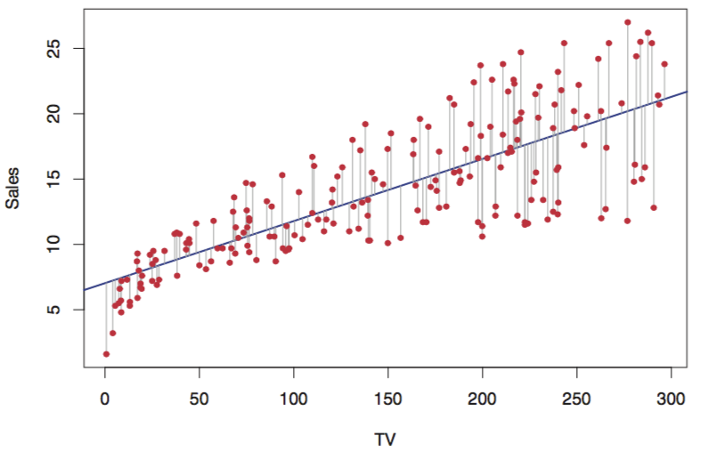
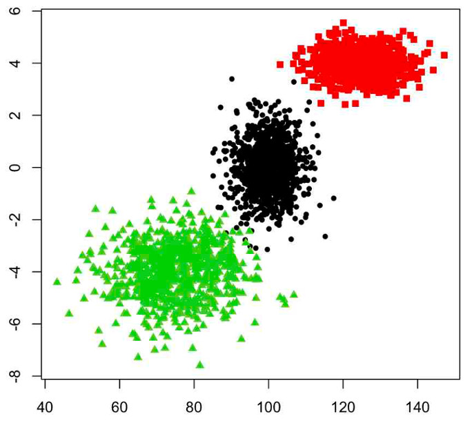
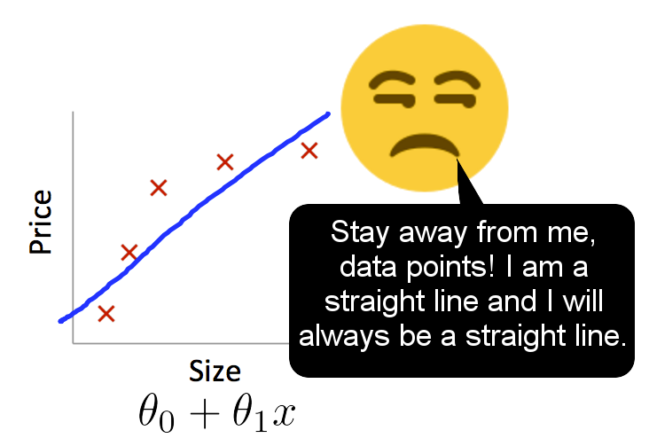
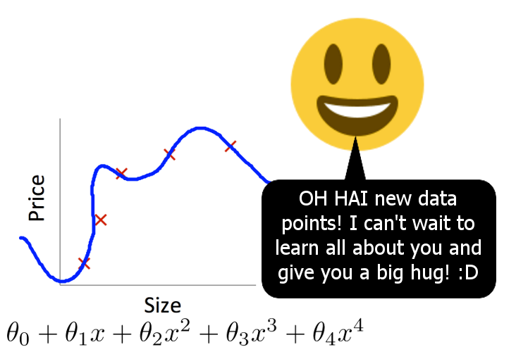
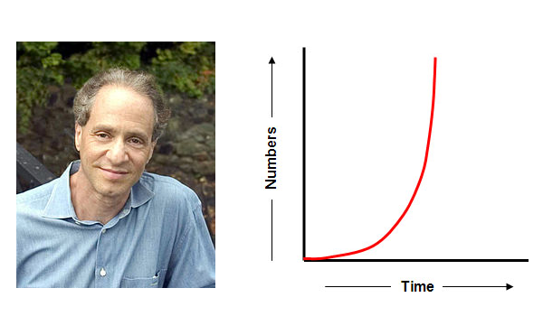

Machine Learning
An overview of topics and how they fit together.
Teaching a machine how to learn from and make predctions on data.

Supervised
or
Unsupervised
Different approaches for different types of problem
Supervised
There's a particular piece of information - the outcome - you want to predict about each piece of data, and you have some data already labeled with this outcome that you can train on.
The outcome is also sometimes referred to as the dependent variable. The predictors are referred to as independent variables.
Regression
or
Classification
What type of question needs to be asked of your data?
Classification
Question: Which class does this example belong to?
Dependent variable is qualitative / categorical
Labeled Data
Binary classification
Standard example: classifying emails as spam or not spam
Moar labels
Multi-class classification
Standard example: identifying hand-written digits
Moar labels for everyone!

Multi-label classification
Each example could fall into multiple categories. E.g. Yelp restaurants categorized as "Mexican food" and "Good for lunch"
Classification Algorithms
Tree-based
- Decision Trees
- Boosting, e.g. AdaBoost
- Bootstrap Aggregation (Bagging)
- Random Forest
Linear and other classifiers
- K Nearest Neighbors (KNN)
- Logistic Regression (linear regression for binary classification)
- Linear Discriminant Analysis (LDA)
- Support Vector Machines
- Perceptrons (the birth of the neural network)
Neural Nets & the whole Deep Learning thing

Note: Deep Learning is not just big neural nets
Regression
or
Classification
What type of question needs to be asked of your data?
Regression
Question: How much y does this example have?
Dependent variable is quantitative / continuous
Simple Linear Regression
(source: ISLR)
Fitting / training a model
Given assumptions about the relationship between your predictors and the outcome, estimate the parameters of that relationship. In a simple linear relationship:
y = a + bx (+ e)
Fitting a model means finding what a and b should be. We fit them to the data we already have.
Training is the process by which we teach the model to fit the data. In simple linear regression we do this by getting it to minimize the Mean Squared Error (MSE), which is the average difference between real values and predicted values.
Gradient Descent
You have a loss function, aka a cost function, which computes the error of your model, and it is a function of the parameters of the model. You need a procedure for minimizing that function with respect to the parameters.
Your prediction algorithm feeds new data into this model to predict the outcome.
Suppose you fit a simple linear model:
y = a + bx
and get a value of 5 for your a parameter and 2 for your b parameter.
If you feed an x value of 3 into this you'd get:
y = 5 + (2 x 3) = 11
Supervised
or
Unsupervised
Different approaches for different types of problem
Unsupervised
Unlabeled data, i.e. no outcome variable, just a bunch of data that you are trying to find some hidden structure in.
K-Means Clustering
(source: http://sherrytowers.com/2013/10/24/k-means-clustering/)

Natural Language Processing
Specialized techniques for working with textual data.
- predictive text
- sentiment analysis
- question answering
- text generation using Markov Chains
- machine translation
Bayesian Machine Learning
Also known as model-based machine learning. Separates model from inference method and uses probabilistic programming to refine models.
- Bayesian Inference
- Latent variables
- MCMC
- Hyperparameters
- BUGS, Church, Stan, PyMC
Random Tips:
Avoid Overfitting
Overfitting is when your model fits your training data really well but doesn't generalize well to new data.
Underfitting: High Bias
Overfitting: High Variance
Regularization
"Shrink" your parameters by adding a penalty. In neural nets this is called "weight decay."
This helps avoid overfitting. If you are underfitting, your model is not sophisticated enough, consider adding more features.
Use a validation set
Don't just split your data into a test set and a training set. The temptation will be too great to tweak the model based on its performance on the test set.
Use a validation set for this, otherwise your test set error is not a good indicator of what the error will be on unseen data.
The Singularity
Is it Near or Far?
Near. Because Exponential Growth

from Michael Littman